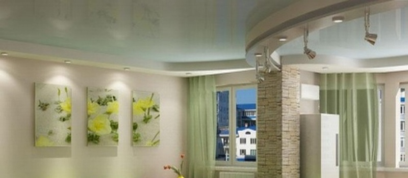

Правило нашей компании — компетентно и достойно вести бизнес!
Специально для Вас:
Бесплатно
составим смету!
Бесплатно
выезд менеджера на объект!
Бесплатно
обследование объекта и выявление дефектов!
Сезонные скидки и акции!
Поэтапная оплата!
Укладка декоративного камня в Севастополе
-
В настоящее время укладка декоративного камня широко используется для внесения определенного стиля дома или в нашем случае квартиры. Ремонт квартир с применением декоративного камня внутри помещений квартир, комнат, коридора, кухни распространенное явление, применяемое для неповторимых дизайнов квартир. Камень декоративный вносит новую стилистическую ноту в образ квартиры, даже если использовать укладку декоративного камня на небольшой площади стены результат будет очевиден.
Современный интерьер квартиры не обходится без применения декоративного камня, тем самым в очередной раз, доказывая свою конкурентоспособность среди других декоративных покрытий и элементов. Технические характеристики искусственного декоративного камня расширяют возможности применения его не только в интерьерах квартир, но широко используется для наружного применения, в том числе и для ландшафтных работах и отделки фасадов домов.
Укладка декоративного камня по цене на порядок ниже, чем укладка натурального, для начала работ требуется определенная подготовка выравнивание поверхностей стен или штукатурные работы, а также поверхность должна быть загрунтована.
Хорошая подготовка основания под укладку декоративного камня залог того что камень в последствии будет хорошо держаться на поверхностях стен к квартире. При работах по укладке декоративного камня используется специальный клей для камня, который разработан по своим техническим характеристикам, свойствам и пластичности делает укладку проще и удобнее, но можно в исключительных случаях использовать и обычный плиточный клей при профессиональной укладке.
Специалисты занимающиеся укладкой декоративного камня предпочитают иметь дело с искусственным камнем, нежели с натуральным по причине удобства в работе. Для внутренней отделке квартир, декоративный камень подходит больше из него можно делать какие угодно рисунки различных конфигураций и геометрических линий разной формы, что само по себе является большим плюсом. Ассортимент декоративного камня, на сегодняшний день огромный начиная с цветовой гаммы и заканчивая различными формами и размерами, что будет нелегко сделать выбор для квартиры.